|
 |
| СПИОЛТО® РЕСПИМАТ® (SPIOLTO® RESPIMAT®) olodaterol, tiotropium bromide раствор д/ингаляций дозированный | ||||||||||||
|
Клинико-фармакологическая группа: Бронхолитический препарат Номер и дата регистрации: ЛП-003164 от 31.08.15 Код ATX: R03AL06 |
Владелец регистрационного удостоверения: зарегистрировано Представительство: | |||||||||||
Форма выпуска, состав и упаковка Раствор для ингаляций дозированный прозрачный, бесцветный или почти бесцветный.
Вспомогательные вещества: бензалкония хлорида раствор - 2.2 мкг (соответственно бензалкония хлорида - 1.1 мкг), динатрия эдетат - 1.1 мкг, хлористоводородная кислота 1М - до pH 2.9, вода очищенная - до 11.05 мг. 60 доз ингаляционных (30 терапевтических доз) - картриджи (1) вместимостью 4.5 мл, помещенные в алюминиевый цилиндр, в комплекте с ингалятором Респимат® - пачки картонные. | ||||||||||||
Описание препарата основано на официально утвержденной инструкции по применению и утверждено компанией-производителем для издания 2018 г. | ||||||||||||
Фармакологическое действие |
Фармакокинетика |
Показания |
Режим дозирования |
Побочное действие |
Противопоказания |
Беременность и лактация |
Особые указания |
Передозировка |
Лекарственное взаимодействие |
Условия хранения и сроки годности |
Условия реализации
Фармакологическое действие
Комбинированный бронхолитический препарат. Олодатерол - бета2-адреномиметик длительного действия и тиотропия бромид - м-холиноблокатор обеспечивают взаимодополняющую бронходилатацию, в результате различного механизма действия активных веществ и различной локализации целевых рецепторов в легких. Олодатерол обладает высоким сродством и селективностью к β2-адренорецепторам. Активация β2-адренорецепторов в дыхательных путях приводит к стимуляции внутриклеточной аденилатциклазы, которая участвует в синтезе циклического 3.5-аденозинмонофосфата (цАМФ). Повышение уровня цАМФ вызывает бронходилатацию, расслабляя гладкомышечные клетки дыхательных путей. Олодатерол является селективным агонистом β2-адренорецепторов длительного действия с быстрым началом действия и длительным (не менее 24 ч) сохранением эффекта. β2-адренорецепторы присутствуют не только в гладкомышечных клетках, но и во многих других клетках, в т.ч. в эпителиальных и эндотелиальных клетках легких и сердца. Точная функция β2-рецепторов в сердце до конца не изучена, но их присутствие указывает на возможность влияний на сердце даже высокоселективных бета2-адренергических агонистов. Тиотропия бромид - м-холиноблокатор длительного действия. Препарат обладает одинаковым сродством к M1-М5 подтипам мускариновых рецепторов. Результатом ингибирования М3-холинорецепторов в дыхательных путях является расслабление гладкой мускулатуры. Бронходилатирующий эффект зависит от дозы и сохраняется в течение не менее 24 ч. Значительная продолжительность действия связана, вероятно, с очень медленной диссоциацией препарата от М3-холинорецепторов: период полудиссоциации существенно более длительный, чем у ипратропия бромида. При ингаляционном способе введения тиотропия бромид, как N-четвертичное производное аммония, оказывает местный избирательный эффект (на бронхи), при этом в терапевтических дозах не вызывая системных м-холиноблокирующих побочных эффектов. Диссоциация от М2-холинорецепторов происходит быстрее, чем от М3-холинорецепторов, что свидетельствует о преобладании селективности в отношении М3 подтипа холинорецепторов над М2-холинорецепторами. Высокое сродство к рецепторам и медленная диссоциация препарата из связи с рецепторами обусловливают выраженный и продолжительный бронходилатирующий эффект у пациентов с ХОБЛ. Бронходилатация, развивающаяся после ингаляции тиотропия бромида, обусловлена, в первую очередь, местным (на дыхательные пути), а не системным действием. В ходе клинических исследований установлено, что препарат Спиолто® Респимат®, применявшийся 1 раз/сут, утром, приводил к быстрому (в течение 5 мин после первой дозы) улучшению функции легких. Эффект препарата Спиолто® Респимат® превосходил эффект тиотропия бромида в дозе 5 мкг и олодатерола в дозе 5 мкг, применявшихся в качестве монотерапии (ОФВ1 при приеме Спиолто® Респимат® на 0.137 л: при приеме тиотропия бромида на 0.058 л; при приеме олодатерола - на 0.125 л). При применении препарата Спиолто® Респимат® по сравнению с применением тиотропия бромида и олодатерола в качестве монотерапии достигался более значительный бронходилатирующий эффект, а также увеличивалась пиковая объемная скорость выдоха в утренние и вечерние часы. Применение препарата Спиолто® Респимат® приводило к снижению риска обострений ХОБЛ по сравнению с плацебо. Препарат Спиолто® Респимат® значительно улучшал емкость вдоха по сравнению с тиотропия бромидом, олодатеролом или плацебо, применявшимися в виде монотерапии. Спиолто® Респимат® по сравнению с плацебо значительно улучшал время переносимости физической нагрузки. Фармакокинетика
Фармакокинетика комбинированного препарата Спиолто® Респимат® эквивалентна фармакокинетике отдельно применяемым олодатеролу и тиотропия бромиду. Олодатеролу и тиотропия бромиду свойственна линейная фармакокинетика. Устойчивое состояние фармакокинетики олодатерола достигалось через 8 дней при применении 1 раз/сут, а степень воздействия увеличивалась по сравнению с применением однократной дозы в 1.8 раза. Устойчивое состояние фармакокинетики тиотропия бромида при применении 1 раз/сут достигалось через 7 дней. Всасывание Олодатерол быстро всасывается, после ингаляции препарата Cmax в плазме обычно достигается в течение 10-20 мин. У здоровых добровольцев после ингаляции препарата абсолютная биодоступность олодатерола составляла около 30%, тогда как абсолютная биодоступность олодатерола после приема препарата внутрь в виде раствора была ниже 1%. Таким образом, системное воздействие олодатерола после ингаляционного применения в основном реализуется путем всасывания в легких, а вклад проглатываемой части дозы в системное воздействие незначителен. После ингаляции раствора тиотропия бромида в системный кровоток поступает около 33% от величины ингаляционной дозы. Абсолютная биодоступность при приеме внутрь составляет 2-3%. Cmax в плазме наблюдается через 5-7 мин после ингаляции. Распределение Связывание олодатерола с белками плазмы составляет примерно 60%, а Vd - 1110 л. Связывание тиотропия бромида с белками плазмы составляет 72%: Vd - 32 л/кг. Доклинические исследования показали, что тиотропия бромид не проникает через ГЭБ. Метаболизм Олодатерол в значительной степени метаболизируется путем непосредственной глюкуронизации и O-деметилирования с последующей конъюгацией. Из 6 идентифицированных метаболитов с β2-адренорецепторами связывается только 1 неконъюгированное деметилированное производное (SOM 1522), однако этот метаболит не обнаруживается в плазме после длительного ингаляционного применения препарата в рекомендуемой терапевтической дозе или в дозах, превышающих терапевтическую в 4 раза. В O-деметилировании олодатерола участвует цитохром Р450 (изоферментов CYP2C9, CYP2C8 и в незначительной степени CYP3A4). В образовании глюкуронидов олодатерола участвуют изоформы уридиндифосфатгликозил трансферазы, UGT2B7, UGT1A1, 1А7 и 1А9. Степень биотрансформации тиотропия бромида незначительна. Это подтверждается тем, что после в/в введения тиотропия бромида молодым здоровым добровольцам 74% тиотропия бромида выводится почками в неизмененном виде. Тиотропия бромид является эфиром, который расщепляется на этанол-N-метилскопин и дитиенилгликолевую кислоту; эти соединения не связываются с мускариновыми рецепторами. В исследованиях in vitro показано, что некоторая часть препарата (<20% от дозы после в/в введения) метаболизируется путем окисления цитохромом Р450 (CYP2D6 и 3А4) с последующей конъюгацией с глутатионом и образованием различных метаболитов. Выведение Общий клиренс олодатерола у здоровых добровольцев составляет 872 мл/мин, а почечный клиренс 173 мл/мин. Конечный T1/2 после в/в применения олодатерола составляет 22 ч, тогда как конечный T1/2 после ингаляционного применения - примерно 45 ч. Из этого следует, что в последнем случае выведение в большей степени зависит от всасывания. Общая меченая изотопом доза олодатерола, выделявшаяся почками (включая исходное соединение и все метаболиты), составляла после в/в введения 38%, после приема внутрь - 9%. Общая меченая изотопом доза, выделявшаяся почками, неизмененного олодатерола составляла, после в/в введения 19%. Общая меченая изотопом доза, выделявшаяся через кишечник, составляла после в/в введения 53% и 84% после приема внутрь. Более 90% дозы препарата выводилось после в/в введения в течение 5 дней и после приема внутрь в течение 6 дней. После ингаляционного применения препарата экскреция неизмененного олодатерола почками на протяжении интервала дозирования составляла у здоровых добровольцев в период устойчивого состояния фармакокинетики 5-7% от величины дозы. Тиотропия бромид после в/в введения в основном выводится почками в неизмененном виде (74%). Общий клиренс после в/в введения тиотропия бромида молодым здоровым добровольцам составляет 880 мл/мин. После ингаляции раствора у пациентов с ХОБЛ почечная экскреция составляет 18.6% (0.93 мкг), оставшаяся неабсорбировавшаяся часть выводится через кишечник. Почечный клиренс тиотропия бромида превышает КК, что свидетельствует о его канальцевой секреции. Терминальный T1/2 тиотропия бромида после ингаляции составляет от 27 до 45 ч. Фармакокинетика в особых клинических случаях Клинические исследования показали: несмотря на влияние возраста, пола и массы тела на системное воздействие олодатерола коррекции дозы не требуется. У пациентов пожилого возраста отмечается снижение почечного клиренса тиотропия (347 мл/мин у пациентов с ХОБЛ в возрасте до 65 лет и 275 мл/мин у пациентов с ХОБЛ старше 65 лет). Однако это не приводило к увеличению значения AUC0-6,ss и Cmax,ss. Раса. Сравнение фармакокинетических данных, полученных в клинических исследованиях олодатерола, выявило тенденцию к более высокому системному воздействию олодатерола у пациентов из Японии и других пациентов монголоидной расы по сравнению с пациентами европеоидной расы. В клинических исследованиях олодатерола, применявшегося в дозах, которые превышали рекомендуемую терапевтическую дозу в 2 раза, у пациентов европеоидной и монголоидной расы каких-либо опасений в отношении безопасности установлено не было. У пациентов с почечной недостаточностью тяжелой степени тяжести (КК <30 мл/мин) системное воздействие олодатерола увеличивалось в среднем в 1.4 раза. Такое повышение воздействия не вызывает опасении в отношении безопасности, учитывая опыт, полученный в ходе применения олодатерола в клинических исследованиях. После ингаляционного применения тиотропия 1 раз/сут в период равновесного состояния у пациентов с ХОБЛ и почечной недостаточностью легкой степени тяжести (КК 50-80 мл/мин) отмечалось небольшое увеличение величин AUC0-6,ss на 1.8-30% и Cmax,ss по сравнению с пациентами с нормальной функцией почек (КК >80 мл/мин). У пациентов с ХОБЛ и почечной недостаточностью средней и тяжелой степени тяжести (КК <50 мл/мин) в/в применение тиотропия бромида приводило к двукратному увеличению общего воздействия тиотропия бромида (значение AUC0-4 увеличивалось на 82%, а величина Cmax увеличилась на 52%) по сравнению с пациентами с нормальной функцией почек. Аналогичное повышение концентрации в плазме отмечалось и после ингаляции сухого порошка. У пациентов с печеночной недостаточностью легкой и средней степени тяжести системное воздействие олодатерола не изменялось. Системное воздействие олодатерола у пациентов с печеночной недостаточностью тяжелой степени тяжести не изучалось. Предполагается, что печеночная недостаточность не оказывает значительного влияния на фармакокинетику тиотропия бромида, т.к. тиотропия бромид преимущественно выводится почками и с помощью неферментативного расщепления эфирной связи с образованием производных, которые не обладают фармакологической активностью. Показания
Режим дозирования
Рекомендуемая терапевтическая доза составляет 2 ингаляции спрея из ингалятора Респимат® (5 мкг/терапевтическая доза тиотропия бромида и 5 мкг/терапевтическая доза олодатерола) 1 раз/сут, в одно и то же время суток. У пациентов пожилого возраста можно использовать препарат Спиолто® Респимат® в рекомендуемой дозе. У пациентов с печеночной недостаточностью легкой и средней степени тяжести можно использовать Спиолто® Респимат® в рекомендуемой дозе. Данных о применении олодатерола у пациентов с печеночной недостаточностью тяжелой степени не имеется. У пациентов с нарушениями функции почек можно использовать препарат Спиолто® Респимат® в рекомендуемой дозе. Пациенты с почечной недостаточностью средней и тяжелой степени, применяющие препарат Спиолто® Респимат®, должны находиться под тщательным наблюдением врача. Правила применения ингалятора Спиолто® Респимат® Перед началом использования препарата следует изучить правила применения ингалятора Спиолто® Респимат®. Ингалятор предназначен для использования 1 раз/сут. Каждый раз при его применении следует делать 2 ингаляции. 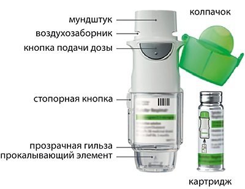 Как хранить ингалятор Спиолто® Респимат® Хранить Спиолто® Респимат® в недоступном для детей месте. Не замораживать Спиолто® Респимат®. Если ингалятор Спиолто® Респимат® не использовался более 7 дней, следует направить его перед применением вниз и нажать один раз на кнопку подачи дозы. Если ингалятор Спиолто® Респимат® не использовался более 21 дня, следует повторить шаги 4-6 из раздела "Подготовка к первому использованию" до появления облачка аэрозоля. Затем повторить шаги 4-6 еще три раза. Не использовать ингалятор Спиолто® Респимат® после окончания срока годности. Не трогать прокалывающий элемент внутри прозрачной гильзы. Уход за ингалятором Спиолто® Респимат® Мундштук, включая металлическую часть внутри мундштука, следует очищать влажной тряпочкой или тканью, как минимум, 1 раз в неделю. Любое незначительное изменение цвета мундштука не влияет на работу ингалятора Спиолто® Респимат®. Определение момента, когда нужно начать пользоваться новым ингалятором 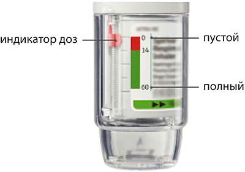 Ингалятор Спиолто® Респимат® содержит 60 ингаляционных доз (т.е. 30 терапевтических доз) при условии применения в соответствии с режимом дозирования (2 ингаляционные дозы 1 раз/сут). Индикатор доз показывает, сколько примерно доз еще осталось. Когда индикатор покажет на красную область шкалы, это означает, что лекарства осталось примерно на 7 дней (14 ингаляционных доз). Когда индикатор доз ингалятора достигнет конца красной области шкалы, ингалятор Спиолто® Респимат® автоматически заблокируется - больше не может быть получено ни одной ингаляционной дозы (поворот прозрачной гильзы будет невозможен). Через 3 месяца после первого использования ингалятор Спиолто® Респимат® следует выбросить, даже если он полностью не использован. Подготовка к перовому использованию 1. Снять прозрачную гильзу 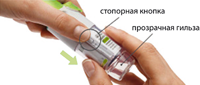
2. Вставить картридж 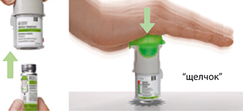
3. Установить на место прозрачную гильзу 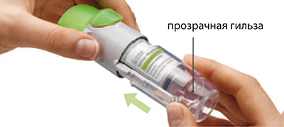
4. Повернуть 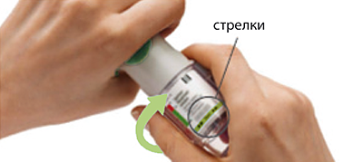
5. Открыть 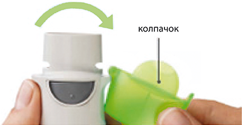
6. Нажать 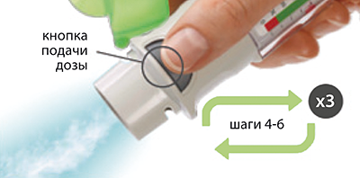
Ежедневное применение Повернуть 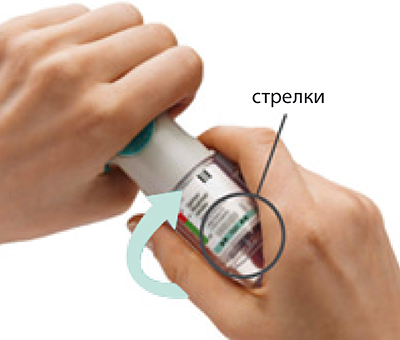
Открыть 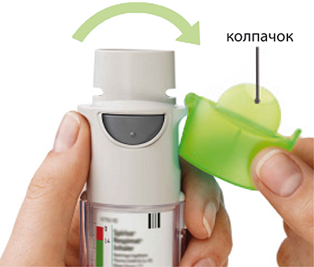
Нажать 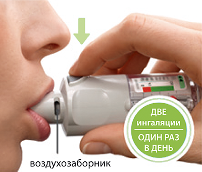 Сделать медленный полный выдох. Обхватить мундштук губами, не перекрывая воздухозаборники. Делая медленный, глубокий вдох через рот, нажать кнопку подачи дозы и продолжать делать вдох. Задержать дыхание примерно на 10 сек или так долго, как возможно. Для получения второй ингаляционной дозы повторить операции: Повернуть, Открыть, Нажать. Ответы на часто задаваемые вопросы 1. Сложно установить картридж на необходимую глубину Вы случайно повернули прозрачную гильзу до установки картриджа? Откройте колпачок, нажмите на кнопку подачи дозы, затем вставьте картридж. Вы вставляете картридж широким концом? Вставьте картридж узким концом в ингалятор. 2. Невозможно нажать на кнопку подачи дозы Повернули ли Вы прозрачную гильзу? Если нет, поверните прозрачную гильзу одним непрерывным движением до щелчка (пол-оборота). Индикатор доз ингалятора Спиолто® Респимат® указывает на ноль? Ингалятор Спиолто® Респимат® блокируется после выпуска 60 ингаляционных доз (30 терапевтических доз). Подготовьте и используйте новый ингалятор Спиолто® Респимат®. 3. Невозможно повернуть прозрачную гильзу Вы уже повернули прозрачную гильзу? Если прозрачная гильза уже повернута, следуйте по шагам "Открыть" и "Нажать" в разделе "Ежедневное применение" для получения ингаляционной дозы. Индикатор доз ингалятора Спиолто® Респимат® указывает на ноль? Ингалятор Спиолто® Респимат® блокируется после выпуска 60 ингаляционных доз (30 терапевтических доз). Подготовьте и используйте новый ингалятор Спиолто® Респимат®. 4. Индикатор доз ингалятора Спиолто® Респимат® достигает нуля слишком быстро Использовали ли Вы Спиолто® Респимат® в соответствии с Режимом дозирования (две ингаляционные дозы 1 раз/сут)? Препарата Спиолто® Респимат® хватает на 30 дней при использовании двух ингаляций 1 раз/сут. Поворачивали ли Вы прозрачную гильзу до установки картриджа? Индикатор доз считает каждый поворот прозрачной гильзы вне зависимости от того, установлен картридж или нет. Выпускали ли Вы ингаляционные дозы в воздух для проверки работы Спиолто® Респимат®. После подготовки ингалятора к использованию не требуется ежедневной проверки ингаляции. Вы установили картридж в использованный ингалятор Спиолто® Респимат®? Всегда устанавливайте новый картридж в новый ингалятор Спиолто® Респимат®. 5. Ингалятор Спиолто® Респимат® выпускает ингаляционные дозы автоматически Был ли открыт колпачок, когда Вы поворачивали прозрачную гильзу? Закройте колпачок, затем поверните прозрачную гильзу. Нажимали ли Вы кнопку подачи дозы во время поворота прозрачной гильзы? Закройте колпачок так, чтобы кнопка подачи дозы была закрыта, затем поверните прозрачную гильзу. Останавливались ли Вы во время поворота прозрачной гильзы, до звука щелчка? Поверните прозрачную гильзу одним непрерывным движением до щелчка (пол-оборота). 6. Ингалятор Спиолто® Респимат® не выпускает ингаляционную дозу Установили ли Вы картридж? Если нет, установите картридж. Вы повторили шаги "Повернуть", "Открыть", "Нажать" менее трех раз после установки картриджа? Повторите шаги "Повернуть", "Открыть", "Нажать" три раза после установки картриджа, как описано в разделе "Подготовка к первому использованию", шаги 4-6. Индикатор доз ингалятора Спиолто® Респимат® указывает на ноль? Если индикатор доз указывает на ноль, значит ингалятор пуст и заблокирован. Не снимайте прозрачную гильзу и не вынимайте картридж после подготовки ингалятора к использованию. Всегда устанавливайте новый картридж в новый ингалятор Спиолто® Респимат®. Побочное действие
Побочные реакции были выявлены на основании данных, полученных при проведении клинических исследований препарата Спиолто® Респимат®. Определений категорий частоты побочных реакций: очень часто (≥1/10), часто (≥1/100, <1/10), нечасто (от ≥1/1000, <1/100), редко (≥1/10 000, <1/1000), очень редко (<1/10 000), частота неизвестна* (частота не может быть оценена на основании имеющихся данных). Инфекционные и паразитарные заболевания: редко - назофарингит. Со стороны обмена веществ: частота неизвестна - дегидратация. Со стороны нервной системы: нечасто - головокружение, бессонница. Со стороны органа зрения: редко - нечеткое зрение; частота неизвестна - повышение внутриглазного давления, глаукома. Со стороны сердечно-сосудистой системы: нечасто - мерцательная аритмия, ощущение сердцебиения, тахикардия, повышение АД; редко - наджелудочковая тахикардия. Со стороны дыхательной системы: нечасто - кашель, дисфония; редко - ларингит, фарингит, носовое кровотечение; частота неизвестна - бронхоспазм, синусит. Со стороны пищеварительной системы: часто - сухость во рту (обычно незначительная); нечасто - запор; редко - кандидоз полости рта, гингивит; частота неизвестна - кишечная непроходимость, включая паралитическую кишечную непроходимость, гастроэзофагеальный рефлюкс, дисфагия, глоссит, стоматит. Со стороны кожи и подкожных тканей: частота неизвестна - кожные инфекции и язвы на коже, сухость кожи. Аллергические реакции: редко - гиперчувствительность (включая реакции немедленного типа) ангионевротический отек, крапивница, зуд; частота неизвестна - сыпь. Со стороны костно-мышечной системы: редко - артралгия, боль в спине**; частота неизвестна - отечность в области суставов. Со стороны почек и мочевыделительной системы: редко - дизурия, задержка мочи (чаще у мужчин с наличием предрасполагающих факторов), инфекция мочевыводящих путей. * Данные побочные реакции не были выявлены в ходе клинических исследований препарата. С вероятностью 95% частота этих побочных реакций не превышает категорию "нечасто". **Нежелательный эффект, относящейся к препарату Спиолто® Респимат®, а не к его компонентам. Многие из перечисленных нежелательных эффектов относятся к антихолинергическим свойствам тиотропия бромида или к бета-адреномиметическим свойствам олодатерола. Поэтому следует принимать во внимание возможность возникновения нежелательных эффектов, характерных для всего класса бета-адреномиметиков, таких как: аритмия, ишемия миокарда, стенокардия, артериальная гипотензия, тремор, головная боль, нервозность, тошнота, мышечные спазмы, усталость, недомогание, гипокалиемия, гипергликемия и метаболический ацидоз. Противопоказания
С осторожностью следует применять препарат у пациентов с закрытоугольной глаукомой, гиперплазией предстательной железы и обструкцией шейки мочевого пузыря; у пациентов с сердечно-сосудистыми заболеваниями, в т.ч. коронарной недостаточностью, нарушениями сердечного ритма, удлинением интервала QT, гипертрофической обструктивной кардиомиопатией, артериальной гипертензией, тиреотоксикозом, судорогами; у пациентов в анамнезе которых отмечались такие заболевания как инфаркт миокарда или госпитализация по поводу сердечной недостаточности (в течение предшествующего года), жизнеугрожающая аритмия, пароксизмальная тахикардия с ЧСС >100 уд./мин; у пациентов с необычными реакциями на симпатомиметические амины. Применение при беременности и кормлении грудью
Клинических данных о влиянии олодатерола/тиотропия бромида на беременность нет. В доклинических исследованиях при использовании высоких доз олодатерола, в несколько раз превышавших терапевтические дозы, установлены влияния типичные для бета2-адреномиметиков. Следует учитывать ингибирующее влияние олодатерола на сократительную способность матки. Препарат Спиолто® Респимат® не следует применять у беременных женщин, если только потенциальная польза для матери не превышает потенциальный риск для плода. Клинических данных о применении олодатерола/тиотропия бромида у женщин, кормящих грудью, нет. Препарат Спиолто® Респимат® не следует применять у кормящих грудью женщин, если только потенциальная польза для матери не превышает потенциальный риск для ребенка. На период применения препарата необходимо прекратить грудное вскармливание. Особые указания
Препарат Спиолто® Респимат® не следует использовать при бронхиальной астме. Эффективность и безопасность препарата Спиолто® Респимат® при бронхиальной астме не изучались. Острый бронхоспазм Препарат Спиолто® Респимат® не показан для лечения острых эпизодов бронхоспазма, т.е. в качестве средства скорой помощи. Гиперчувствительность После применения препарата Спиолто® Респимат® возможно развитие реакций гиперчувствительности немедленного типа. Парадоксальный бронхоспазм Применение препарата Спиолто® Респимат®, как и других ингаляционных лекарственных средств, может привести к парадоксальному бронхоспазму, иногда угрожающему жизни. В случае развития парадоксального бронхоспазма применение препарата Спиолто® Респимат® должно быть немедленно прекращено и назначена альтернативная терапия. Пациенты с нарушениями функции почек Т.к. тиотропия бромид выводится преимущественно почками, пациенты с почечной недостаточностью средней и тяжелой степени тяжести (КК <50 мл/мин), применяющие препарат Спиолто® Респимат®, должны находиться под тщательным наблюдением врача. Нарушения со стороны органа зрения Пациенты должны быть ознакомлены о правильном применении препарата Спиолто® Респимат®. Не следует допускать попадания раствора или аэрозоля в глаза. Боль или дискомфорт в глазах, нечеткое зрение, зрительные ореолы вокруг источников света в сочетании с покраснением глаз, вызванным отеком конъюнктивы и роговицы могут быть симптомами острой закрытоугольной глаукомы. При развитии любой комбинации этих симптомов следует немедленно обратиться к специалисту. Глазные капли, обладающие миотическим действием, не считаются эффективным лечением. Сердечно-сосудистые эффекты Олодатерол, как и другие бета2-адреномиметики, может оказывать клинически существенное влияние на сердечно-сосудистую систему у некоторых пациентов (учащение пульса, повышение АД и/или появление соответствующих симптомов). В случае возникновения таких симптомов может потребоваться прекращение лечения. Кроме того, сообщалось, что бета2-адреномиметики приводили к таким изменениям ЭКГ, как уплощение зубца Т и депрессия сегмента ST, хотя клиническое значение этих изменений неизвестно. Гипокалиемия Бета2-адреномиметики у некоторых пациентов могут приводить к развитию гипокалиемии, создающей предпосылки для возникновения нежелательных влиянии на сердечно-сосудистую систему. Снижение концентрации калия в сыворотке крови обычно кратковременно и не требует его восполнения. У пациентов с тяжелой ХОБЛ гипокалиемия может усиливаться из-за гипоксии и сопутствующего лечения и увеличивать риск развития аритмий. Гипергликемия Ингаляционное применение больших доз бета2-адреномиметиков может привести к увеличению концентрации глюкозы в плазме крови. Спиолто® Респимат® не следует применять в комбинации с каким-либо другим лекарственным препаратом, содержащим бета2-адреномиметики длительного действия. Пациентов, часто применяющих ингаляционные бета2-адреномиметики короткого действия (например, 4 раза/сут), необходимо проинструктировать о том, что эти препараты используются только для облегчения острых симптомов бронхоспазма. Спиолто® Респимат® предназначен для поддерживающего лечения больных ХОБЛ. В связи с тем обстоятельством, что в общей популяции ХОБЛ существенно преобладают больные в возрасте старше 40 лет, при назначении препарата пациентам моложе 40 лет требуется спирометрическое подтверждение диагноза ХОБЛ. Влияние препарата на способность управлять транспортными средствами и механизмами Исследования по изучению влияния на способность управлять транспортными средствами и механизмами не проводились. Следует соблюдать осторожность при выполнении данных видов деятельности, т.к. возможно развитие головокружения или нечеткости зрения. Передозировка
Симптомы: передозировка олодатерола может привести к выраженным эффектам, типичным для бета2-адреномиметиков, например, к ишемии миокарда, повышению или снижению АД, тахикардии, аритмиям, ощущению сердцебиения, головокружению, нервозности, бессоннице, беспокойству, головной боли, тремору, сухости во рту, спазму мышц, тошноте, усталости, недомоганию, гипокалиемии, гипергликемии и метаболическому ацидозу. При применении высоких доз тиотропия бромида возможны проявления м-холиноблокирующего действия. После 14-дневного ингаляционного применения тиотропия бромида в дозах, достигавших 40 мкг, у здоровых лиц не наблюдалось значимых неблагоприятных явлений, кроме чувства сухости слизистых оболочек носа и ротоглотки, частота которых зависела от величины дозы (10-40 мкг/сут). Исключение составляло отчетливое снижение саливации, начиная с 7 дня применения препарата. Лечение: прием препарата Спиолто® Респимат® следует прекратить. Показано поддерживающее и симптоматическое лечение. В тяжелых случаях необходима госпитализация. Может рекомендоваться применение бета1-адреноблокаторов, но только при соблюдении особой осторожности, т.к. использование этих препаратов может вызвать бронхоспазм. Лекарственное взаимодействие
Хотя специальных исследований лекарственного взаимодействия не проводилось, тиотропия бромид применяли совместно с другими препаратами, для лечения ХОБЛ, включая метилксантины, стероиды для приема внутрь и ингаляционного применения, при этом клинических признаков лекарственного взаимодействия не отмечалось. Длительное совместное применение тиотропия бромида с другими м-холиноблокирующими препаратами не изучалось. Поэтому долгосрочное совместное применение препарата Спиолто® Респимат® с другими м-холиноблокирующими препаратами не рекомендуется. Одновременное применение других адренергических препаратов может усиливать нежелательные эффекты препарата Спиолто® Респимат®. Одновременное применение ксантиновых производных, стероидов или диуретиков (не относящихся к группе калийсберегающих) может усиливать гипокалиемический эффект адреномиметиков. Бета-адреноблокаторы могут ослаблять эффект олодатерола или противодействовать этому эффекту. В этом случае предпочтительно применение бета1-адреноблокаторов, хотя и их следует применять с осторожностью. Ингибиторы МАО, трициклические антидепрессанты или другие препараты, способные удлинять интервал QTc, могут усиливать действие препарата Спиолто® Респимат® на сердечно-сосудистую систему. Совместное применение олодатерола с кетоконазолом приводило к увеличению системного воздействия олодатерола в 1.7 раза. Однако это не влияло на безопасность. Изменения дозы не требуется. |
||||||||||||
Вернуться наверх |
||||||||||||
Copyright © Справочник Видаль «Лекарственные препараты в России», Москва, Россия